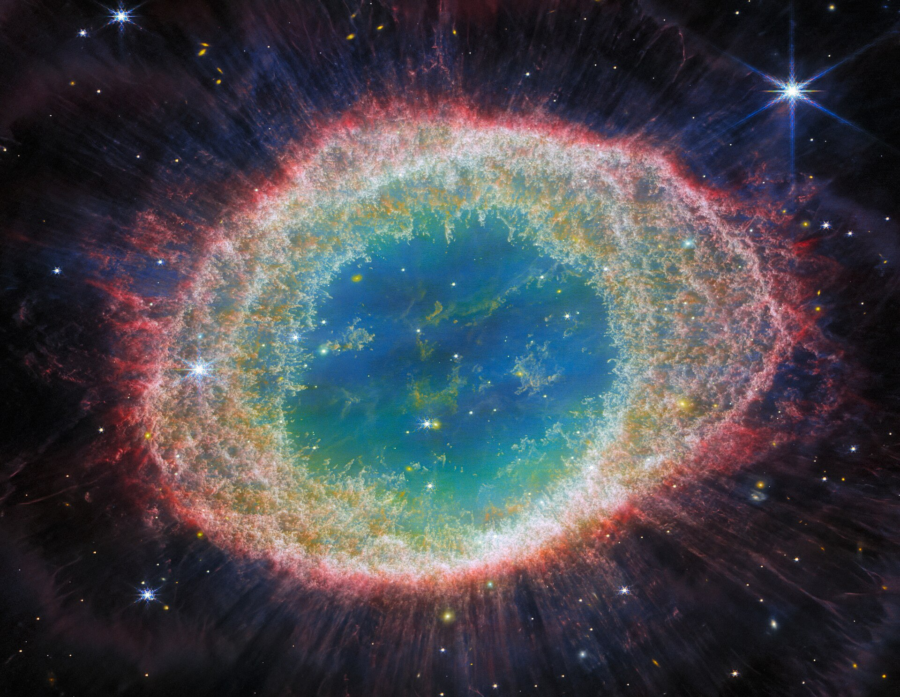

오늘의 천체 · LYRA
M57 고리 성운

태양과 비슷한 별이 바깥층을 방출하며 남긴 행성상 성운입니다. 실제로는 통 모양의 가스 구조를 지구에서 바라보아 고리처럼 보이며, 약 2,000광년 떨어져 있습니다.
설명 출처: NASA오늘의 천체 · LYRA

태양과 비슷한 별이 바깥층을 방출하며 남긴 행성상 성운입니다. 실제로는 통 모양의 가스 구조를 지구에서 바라보아 고리처럼 보이며, 약 2,000광년 떨어져 있습니다.
설명 출처: NASA